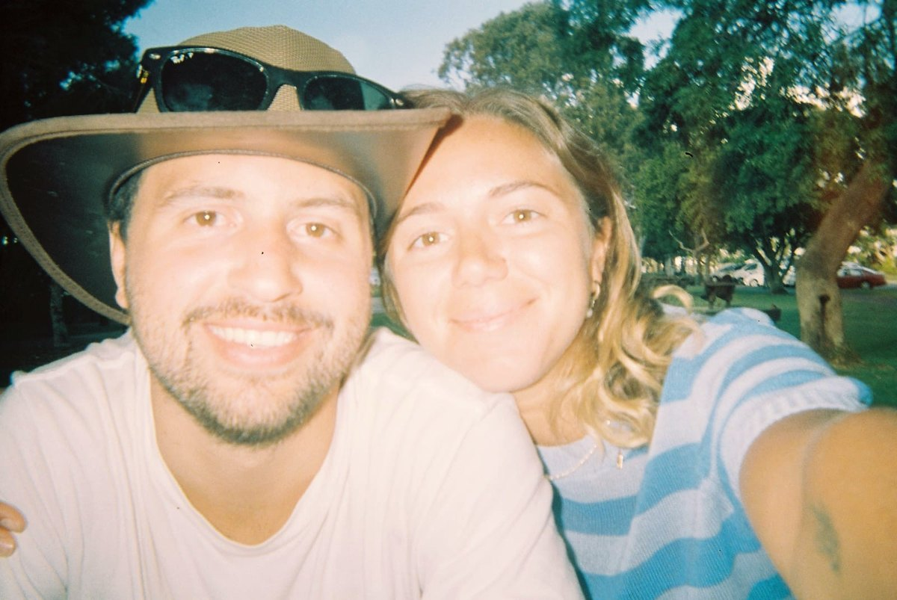
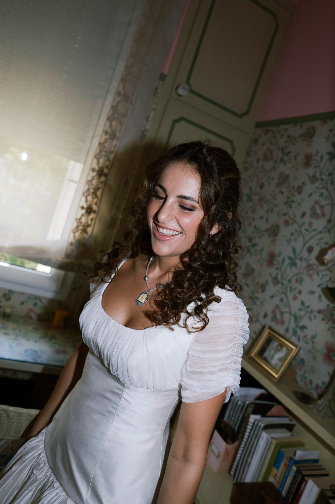
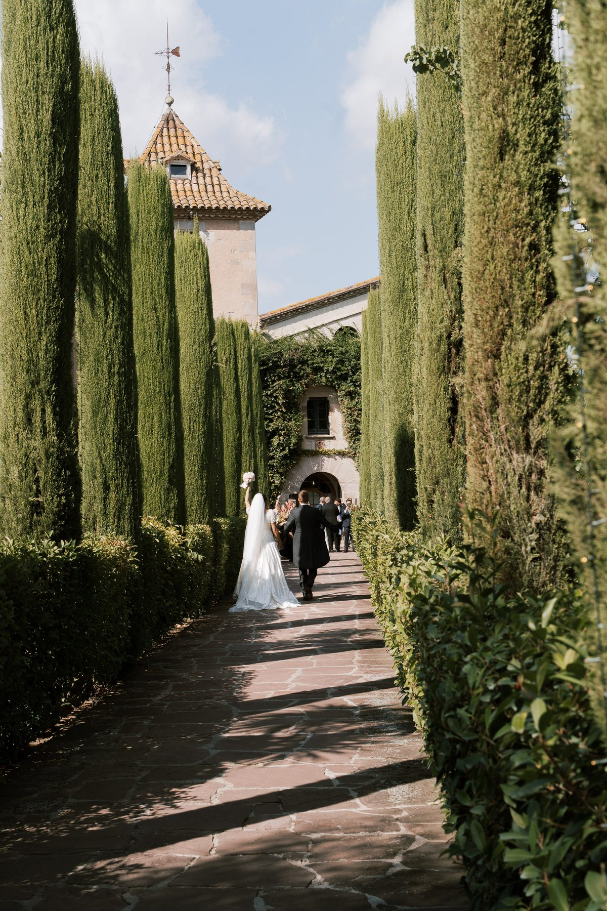
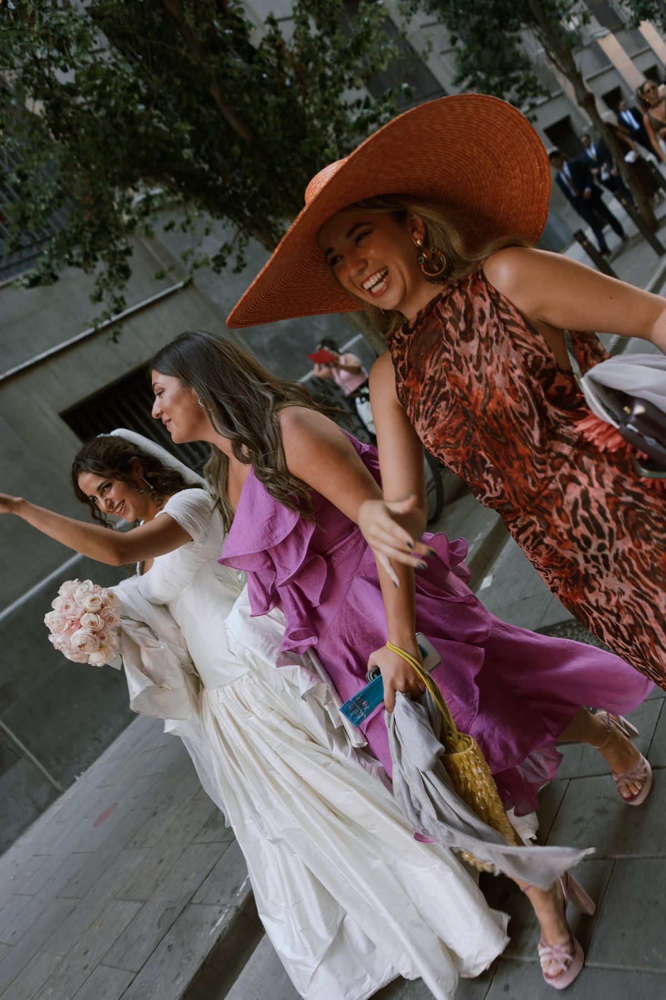
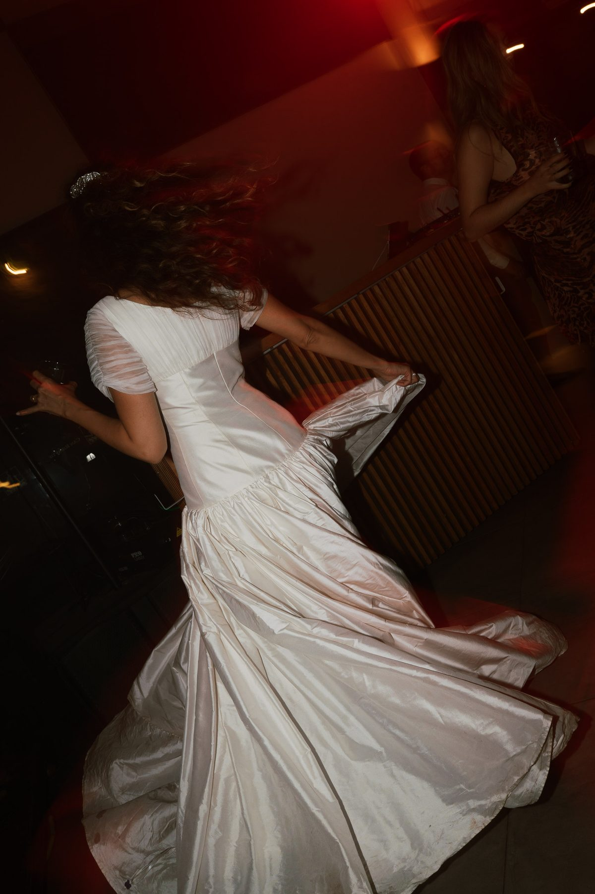
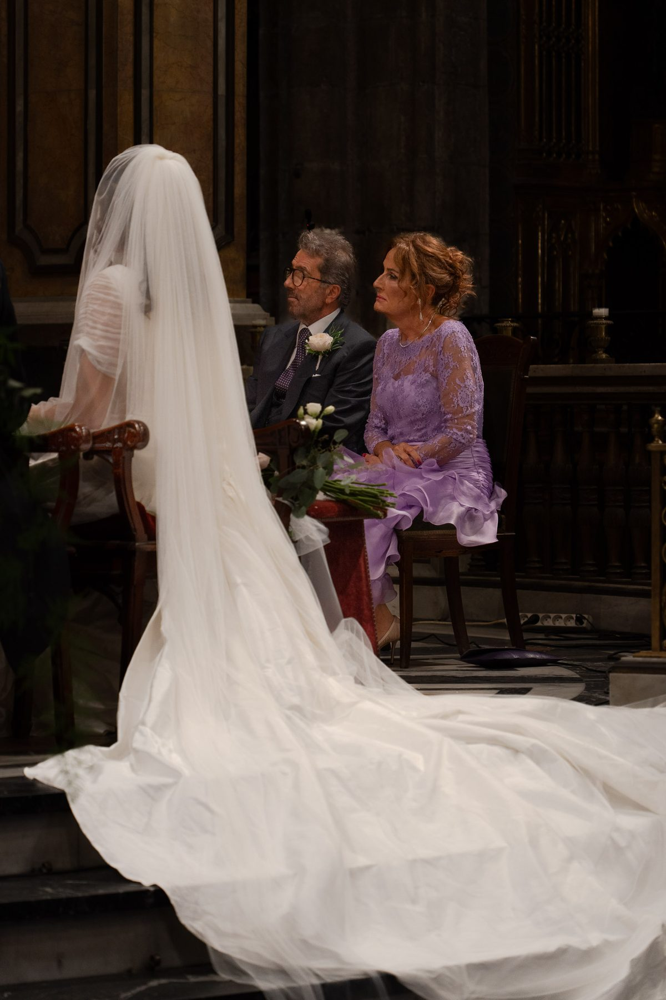
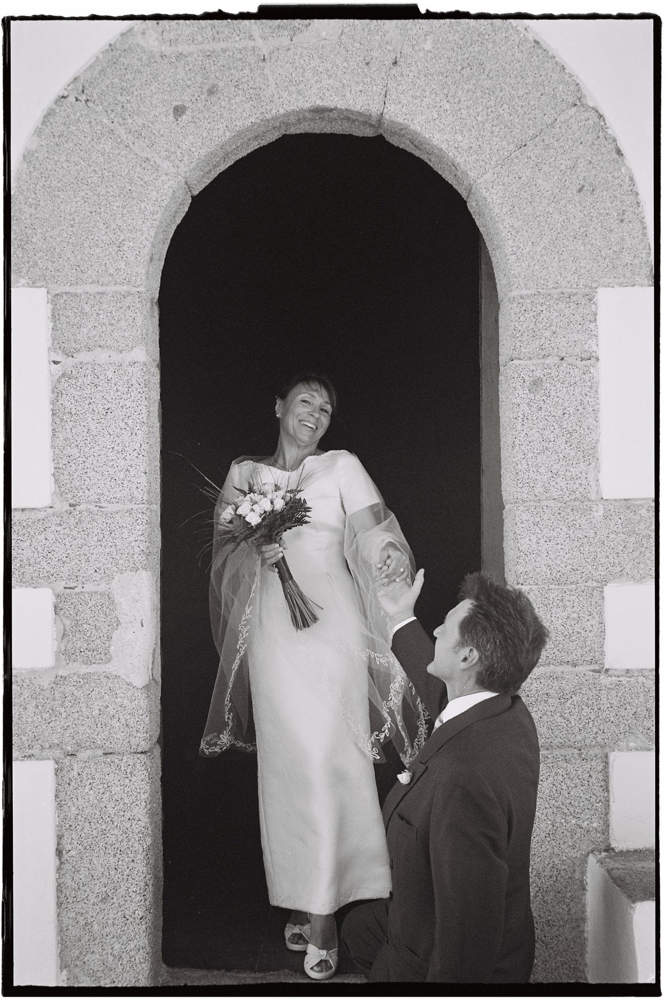
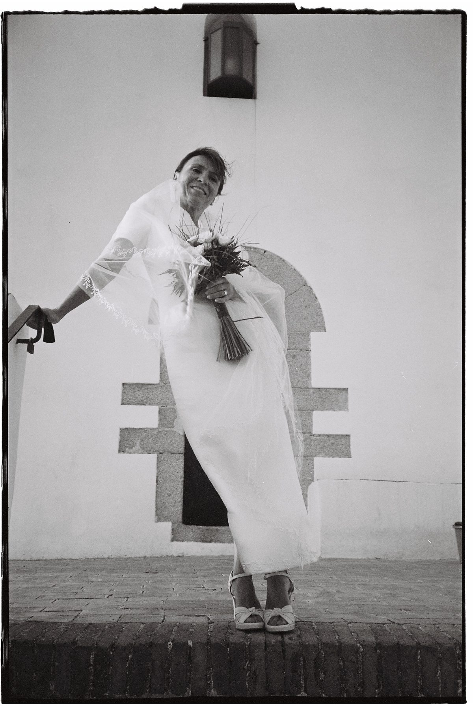

About
Abril & Gerard
Una fotógrafa de Argentina y un diseñador de Barcelona
Somos Abril y Gerard: pareja en la vida y en el trabajo. Nos conocimos en Australia, ella viene de Argentina y yo de Barcelona, y hoy vivimos en Barcelona y fotografiamos bodas por todo el mundo, siempre juntos. Por eso cada día lo miramos desde dos sitios a la vez.
Abril es fotógrafa y viene de Argentina. Empezó a enamorarse de la fotografía mientras viajaba, con fotos de paisajes y de deportes acuáticos. Cuando mira a una pareja, busca transmitir el deseo de felicidad que tienen.
Gerard es de Barcelona, diseñador, y ha vivido y trabajado en Australia e Indonesia. Lo que le llevó a la cámara fue enamorarse de una cámara analógica de su abuelo y descubrir que podía captar momentos que nadie más veía. En una boda se fija en los detalles, en las miradas y en toda la gente que envuelve el evento: los invitados, los gestos pequeños, lo que pasa alrededor.
Trabajamos con todo tipo de material, en digital y en película de 35 mm, en color y en blanco y negro. Abril trabaja más en digital, y Gerard más en analógico y en vídeo.
El día de la boda nos adaptamos a lo que quiera cada pareja. A veces Gerard acompaña al novio y Abril a la novia, pero casi siempre lo hacemos todo juntos: ella mira sobre todo a los novios, y él, con el vídeo, a los detalles y a la gente que los rodea.
Elegimos las bodas porque nosotros también somos pareja y sabemos lo que queremos en nuestro propio casamiento. Eso nos permite entender y transmitir la mirada de quien se casa. Nos escriben todo tipo de parejas: no discriminamos, y todo el mundo es bienvenido delante de nuestras lentes.










